|
Submitted To:
Dr. Himani Mittal
Department of Computer Science GGD SD College, Chandigarh |
Submitted By:
Gurinder Singh & Yuvraj
Roll Nos.: 2541579 & 2541654 BCA – C, 2023-2026 |
We, Gurinder Singh & Yuvraj, Roll Nos. 2541579 & 2541654, students of Bachelor of Computer Applications (BCA), Goswami Ganesh Dutta Sanatan Dharma College, Chandigarh, hereby declare that the project report titled "PHOENIX – A Full-Stack Car Commerce Web Application" submitted to the Department of Computer Science, GGD SD College, Chandigarh, in partial fulfillment of the requirements for the degree of Bachelor of Computer Applications, is a record of original work done by us.
We further declare that:
Date: ___________________
Place: Chandigarh
The completion of this project could not have been possible without the participation, guidance, and assistance of so many people whose names cannot all be enumerated. Their contributions are, however, sincerely appreciated and gratefully acknowledged.
We would like to express our heartfelt gratitude to Dr. Rina, Head of the Department of Computer Science, GGD SD College, Chandigarh, for providing the necessary facilities and academic environment that enabled the successful completion of this project.
We are deeply thankful to our project teachers, Dr. Pooja Mohan & Dr. Himani Mittal, Department of Computer Science, for their invaluable guidance, constant encouragement, and constructive feedback throughout the duration of this project. Their insightful suggestions have been instrumental in shaping the direction and quality of this work.
We would also like to extend our appreciation to the entire faculty of the Department of Computer Science for their academic support and the knowledge they have imparted over the course of our BCA program. Their teachings have provided a strong foundation for the technical skills applied in this project.
Last but certainly not least, we are grateful to our families and friends for their unwavering moral support, patience, and encouragement throughout the development of this project.
The automotive industry is undergoing a significant digital transformation, with consumers increasingly preferring online platforms for discovering, comparing, and purchasing vehicles. "Phoenix" is a modern, full-stack car commerce web application designed to bridge the gap between car buyers and sellers through an intuitive, feature-rich digital marketplace.
Key features of Phoenix include advanced car search and filtering, category-based browsing (SUV, Sedan, Electric, Sports), detailed vehicle specification pages, a complete reservation lifecycle (book, confirm), user profile management, and a powerful admin panel for inventory control, booking management, and customer oversight.
The system implements Role-Based Access Control (RBAC) with Supabase Auth, ensuring secure separation between regular users and administrators. Row-Level Security (RLS) policies enforced at the database level provide an additional layer of data protection.
This report documents the complete software development lifecycle of Phoenix — from requirements analysis and system design through to implementation, testing, and deployment — providing a thorough understanding of the technical and functional aspects of the application.
Keywords: Car Commerce, E-Commerce, React.js, Node.js, Supabase, PostgreSQL, REST API, Role-Based Access Control, Web Application, Full-Stack Development.
| Figure No. | Figure Title | Page No. |
|---|---|---|
| Figure 4.1 | Three-Tier System Architecture of Phoenix | 19 |
| Figure 4.2 | Use Case Diagram – User Module | 20 |
| Figure 4.3 | Use Case Diagram – Admin Module | 21 |
| Figure 4.4 | Data Flow Diagram – Level 0 (Context Diagram) | 22 |
| Figure 4.5 | Data Flow Diagram – Level 1 | 22 |
| Figure 4.6 | Data Flow Diagram – Level 2 (Reservation Flow) | 23 |
| Figure 4.7 | Entity-Relationship (ER) Diagram | 23 |
| Figure 4.8 | SDLC – Agile Model Representation | 28 |
| Figure 5.1 | Screenshot – Home Page | 38 |
| Figure 5.2 | Screenshot – Car Listing Page | 38 |
| Figure 5.3 | Screenshot – Car Details Page | 39 |
| Figure 5.4 | Screenshot – User Registration Page | 39 |
| Figure 5.5 | Screenshot – User Login Page | 40 |
| Figure 5.6 | Screenshot – User Profile Page | 40 |
| Figure 5.7 | Screenshot – My Reservations Page | 41 |
| Figure 5.8 | Screenshot – Admin Dashboard | 41 |
| Figure 5.9 | Screenshot – Admin Inventory Management | 42 |
| Figure 5.10 | Screenshot – Admin Bookings Management | 38 |
| Figure 5.11 | Screenshot – Admin Customers Management | 38 |
| Table No. | Table Title | Page No. |
|---|---|---|
| Table 3.1 | Hardware Requirements | 12 |
| Table 3.2 | Software Requirements | 13 |
| Table 3.3 | Functional Requirements – User Module | 14 |
| Table 3.4 | Functional Requirements – Admin Module | 15 |
| Table 4.1 | Database Table: profiles | 26 |
| Table 4.2 | Database Table: cars | 27 |
| Table 4.3 | Database Table: reservations | 28 |
| Table 4.4 | Database Table: reviews | 29 |
| Table 4.5 | API Endpoints – Authentication | 30 |
| Table 4.6 | API Endpoints – Cars | 31 |
| Table 4.7 | API Endpoints – Reservations | 31 |
| Table 4.8 | API Endpoints – Admin | 32 |
| Table 5.1 | Frontend Dependencies (package.json) | 35 |
| Table 5.2 | Backend Dependencies (package.json) | 36 |
| Table 6.1 | Test Cases – Authentication Module | 44 |
| Table 6.2 | Test Cases – Car Listing Module | 44 |
| Table 6.3 | Test Cases – Reservation Module | 45 |
| Table 6.4 | Test Cases – Admin Module | 45 |
| Table 6.5 | Testing Traceability Matrix | 49 |
The global automotive industry has experienced a fundamental shift in its sales paradigm over the past decade. The proliferation of the internet and mobile technology has empowered consumers to conduct thorough research, compare vehicles across brands, and initiate purchasing decisions entirely online, long before setting foot in a physical showroom. According to industry reports, over 90% of car buyers use the internet as a part of their purchase journey, with a growing segment completing entire transactions digitally.
In India, the combination of rising disposable incomes, increased internet penetration — particularly in Tier-II and Tier-III cities — and growing trust in online transactions has created fertile ground for automotive e-commerce platforms. Platforms that aggregate listings, provide transparent pricing, facilitate financing options, and offer seamless booking experiences are rapidly disrupting traditional dealership models.
Despite this growth, many existing platforms suffer from fragmented user experiences, opaque pricing, poor mobile responsiveness, and inadequate administrative tooling. Small and mid-sized dealerships, in particular, lack access to affordable, customizable digital solutions that they can manage independently.
Phoenix was conceived to address precisely these gaps — delivering a polished, enterprise-grade car commerce experience accessible to both large aggregators and independent dealers, built on a modern, scalable, and open technology stack.
Traditional car buying and selling processes are characterized by significant friction points for all stakeholders involved:
Existing solutions in the market either cater to large aggregators with high entry costs or provide simplistic listing-only platforms lacking booking and management capabilities. There is a clear need for a full-stack, open-source automobile commerce platform that delivers:
The primary objectives of the Phoenix project are as follows:
The Phoenix project encompasses the following modules and capabilities within its defined scope:
A thorough review of existing automotive e-commerce solutions was conducted to identify gaps in the market and benchmark Phoenix against established platforms.
CarDekho is one of India's largest automotive portals, offering new and used car listings, reviews, price comparisons, and dealer connections. It provides EMI calculators, insurance tie-ups, and finance options. However, the platform focuses primarily on aggregating dealer listings and does not offer a self-contained inventory management interface for independent dealers. The administrative backend is not accessible to end dealerships.
Cars24 specializes in used vehicle commerce with a focus on instant buying and selling. Its algorithm-driven pricing model and streamlined inspection process represent innovative approaches to vehicle valuation. However, it operates as a closed marketplace; sellers cannot manage their own listings or interact directly with buyers through the platform.
OLX Autos is a peer-to-peer listing platform that allows individuals to list and browse used cars. While offering broad reach, it lacks reservation management, detailed specification tracking, role-based access control, and any form of transactional workflow beyond contact initiation between buyer and seller.
AutoTrader is a leading automotive marketplace in the United Kingdom and United States. It provides sophisticated search tools, dealership management portals, finance calculators, and reservation features. Its architecture is closer to what Phoenix aims to achieve, though it targets large-scale dealerships and is not open-source or affordable for small businesses.
The following table compares Phoenix against existing platforms across key functional dimensions:
| Feature | CarDekho | Cars24 | OLX Autos | Phoenix |
|---|---|---|---|---|
| Car Listings & Search | Yes | Yes | Yes | Yes |
| User Authentication | Yes | Yes | Yes | Yes |
| Reservation Management | Partial | Yes | No | Yes (Full Lifecycle) |
| Admin Dashboard | Dealer Only | Internal Only | No | Yes (Full CRUD) |
| Role-Based Access | Partial | No | No | Yes (User/Admin) |
| Open Source / Customizable | No | No | No | Yes |
| Real-time Database | No | Yes (internal) | No | Yes (Supabase) |
| Mobile Responsive | Yes | Yes | Yes | Yes |
| Advanced Filtering | Yes | Limited | Limited | Yes (Multi-param) |
| Row-Level Security | No | No | No | Yes (PostgreSQL RLS) |
As evident from the comparison, Phoenix stands out as the only solution offering a complete, open, customizable stack with full administrative control, reservation lifecycle management, and database-level security.
During the planning phase, several technology stacks and architectural patterns were evaluated before finalizing the stack used in Phoenix.
React.js was chosen over Angular and Vue.js for the following reasons: its component-based
architecture promotes reusability and maintainability; a vast ecosystem of libraries (Framer Motion, Lucide React,
Recharts) accelerates development; React's virtual DOM ensures optimal rendering performance; and its widespread
industry adoption ensures long-term community support. React 19's concurrent features were specifically leveraged
for improved loading performance through React.lazy() and Suspense.
Node.js with Express.js 5 was selected for the backend API due to its non-blocking I/O model, which is ideal for handling concurrent API requests in a marketplace environment. Express.js 5 includes improved error handling and native promise support. Alternatives considered included Django (Python) and Spring Boot (Java), but Node.js was preferred for its JavaScript consistency across the full stack.
The project migrated from an initial MongoDB/Mongoose design to Supabase (PostgreSQL). PostgreSQL's relational model is more appropriate for representing the structured relationships between users, cars, reservations, and reviews. Supabase's additional features — including built-in authentication, automatic REST API generation, Row-Level Security (RLS) policies, and real-time subscriptions — significantly reduced development overhead and improved security posture without requiring a separate auth service.
Tailwind CSS was chosen for its utility-first approach, enabling rapid UI development with consistent design tokens. Its JIT (Just-in-Time) compilation ensures minimal CSS bundle sizes in production, and its responsive design utilities significantly simplified mobile-first layout development.
The application is built using React.js on the frontend and Node.js with Express.js on the backend, with Supabase (PostgreSQL) as the cloud database. The platform offers complete car listing management, user authentication, car reservation/booking, and a comprehensive administrative dashboard, all delivered through a responsive and aesthetically refined user interface styled using Tailwind CSS.
Framer Motion was integrated for page transitions, component entry animations, and interactive UI micro-animations. Its declarative API integrates seamlessly with React's component model and provides hardware-accelerated animations through CSS transforms.
A feasibility study is a preliminary investigation into the potential success of a proposed project. For the Phoenix Car Commerce application, a comprehensive feasibility analysis was conducted before committing development resources to ensure the project was viable from multiple perspectives.
Economic feasibility evaluates the cost-effectiveness of the proposed system. Phoenix is designed to be highly economically viable:
Technical feasibility assesses whether the current technical resources, software, and hardware are sufficient to develop the system successfully.
This dimension measures how well the proposed system solves problems and whether the targeted users will adapt to it seamlessly.
The platform must comply with standard internet business regulations.
In order to fully understand the structural mechanics of Phoenix, it is imperative to explore the theoretical foundations of the core technologies utilized in its development.
React is an open-source, front-end JavaScript library maintained by Meta (formerly Facebook). It is used for building composite user interfaces, specifically for single-page applications (SPAs). Phoenix utilizes several core principles of React:
CarCard or Navbar are isolated components
that manage their own scoped state, promoting clean code and rapid debugging.useEffect predominantly to trigger backend API calls when a
component mounts, and useState to locally cache the returned JSON payload for rendering.AuthContext. This securely broadcasts
the current logged-in user state to every layer of the application instantly.The backend of Phoenix represents the "brain" of the application, responsible for routing requests, applying business logic, and guarding database access.
authenticateToken middleware. If the JWT is missing or forged, the middleware abruptly
terminates the request chain with an HTTP 401 Unauthorized status, completely shielding the core logic from
malicious intent.While NoSQL databases (like MongoDB) are popular in modern web development, Phoenix utilizes PostgreSQL—a powerful, standard-compliant object-relational database. Supabase acts as a backend-as-a-service wrapping PostgreSQL with modern web tools.
Stateful authentication (where sessions are saved in a server's memory) limits the ability of a backend to scale horizontally. Phoenix adopts stateless authentication using JSON Web Tokens (JWT).
Upon successful login, the server cryptographically signs a JSON payload containing the user's UUID and role, returning a Base64-encoded string (the JWT). This token is stored in the user's browser (Local Storage/Cookies). For all subsequent sensitive requests (like making a reservation), the React frontend attaches this JWT as an HTTP Authorization header. The Express server decodes and cryptographically verifies the token's signature using a secret server-side key. This ensures the token has not been tampered with, all without needing to query a session table in the database.
Instead of authoring large, monolithic standard CSS stylesheets containing semantic class names (e.g.,
.btn-primary), Phoenix utilizes Utility-First CSS via Tailwind.
By applying highly specific atomic classes directly into the HTML/JSX (e.g.,
flex items-center bg-red-600 hover:bg-red-700 p-4 rounded-lg shadow-md), developers are not forced to
constantly context-switch between JS files and CSS files. More importantly, Tailwind's compiler statically
analyzes the React components at build time, stripping out all unused CSS rules, resulting in a microscopic
production CSS file that drastically improves First Contentful Paint (FCP) times.
The following hardware configuration is recommended for developing and running the Phoenix application locally:
| Component | Minimum Requirement | Recommended |
|---|---|---|
| Processor | Intel Core i3 / AMD Ryzen 3 (dual-core, 1.6 GHz) | Intel Core i5/i7 or AMD Ryzen 5 (quad-core, 2.4 GHz+) |
| RAM | 4 GB DDR4 | 8 GB DDR4 or higher |
| Storage | 20 GB free disk space (HDD) | 50 GB free SSD storage |
| Display | 1280 × 720 resolution | 1920 × 1080 Full HD |
| Network | 10 Mbps broadband connection | 50 Mbps+ broadband (for Supabase sync) |
| Browser | Google Chrome 90+ / Firefox 88+ | Latest version of Chrome / Edge |
| Operating System | Windows 10 / macOS 11 / Ubuntu 20.04 | Windows 11 / macOS 13+ / Ubuntu 22.04 |
For production deployment, cloud hosting infrastructure is used (e.g., Vercel for frontend, Render/Railway for backend), eliminating hardware dependencies for end users.
| Software / Tool | Version Used | Purpose |
|---|---|---|
| Node.js | v18.x LTS | JavaScript runtime for backend server |
| npm | v9.x+ | Package manager for dependencies |
| React.js | v19.2.3 | Frontend UI library |
| Express.js | v5.2.1 | Backend web framework |
| Supabase JS SDK | v2.91.0 | Database & Auth client |
| Tailwind CSS | v3.4.19 | Utility-first CSS framework |
| Framer Motion | v12.29.0 | Animation library |
| React Router DOM | v7.12.0 | Client-side routing |
| Axios | v1.13.2 | HTTP client for API calls |
| Recharts | v3.7.0 | Chart library for admin dashboard |
| Lucide React | v0.563.0 | Icon library |
| Multer | v2.0.2 | File upload middleware |
| Visual Studio Code | Latest | Code editor / IDE |
| Supabase Platform | Cloud (Free Tier) | PostgreSQL database hosting & auth |
| Postman | v10+ | API testing and documentation |
| Git / GitHub | v2.40+ | Version control |
Functional requirements define the specific behaviors the system must exhibit. These are organized by user role:
| ID | Requirement | Priority |
|---|---|---|
| FR-U01 | Users shall be able to register using their full name, email address, and password. | High |
| FR-U02 | Users shall be able to log in using their registered email and password. | High |
| FR-U03 | Users shall be able to reset their password via an email link. | High |
| FR-U04 | Users shall be able to browse all car listings with applied filters. | High |
| FR-U05 | Users shall be able to search cars by name, brand, or model keyword. | High |
| FR-U06 | Users shall be able to filter cars by category, brand, and price range. | High |
| FR-U07 | Users shall be able to view detailed specifications of individual cars. | High |
| FR-U08 | Authenticated users shall be able to reserve/book a car. | High |
| FR-U09 | Users shall be able to view their reservation history and current status. | High |
| FR-U11 | Users shall be able to update their profile information and avatar. | Medium |
| FR-U12 | Users shall be able to change their account password. | Medium |
| FR-U13 | Users shall be able to add and update their delivery/contact address. | Medium |
| ID | Requirement | Priority |
|---|---|---|
| FR-A01 | Admins shall be able to log into a protected admin panel. | High |
| FR-A02 | Admins shall be able to view platform-wide statistics on a dashboard. | High |
| FR-A03 | Admins shall be able to add new car listings with full specifications. | High |
| FR-A04 | Admins shall be able to edit and delete existing car listings. | High |
| FR-A05 | Admins shall be able to mark cars as featured/unfeatured. | Medium |
| FR-A06 | Admins shall be able to view all reservations with filtering by status. | High |
| FR-A07 | Admins shall be able to update reservation statuses (pending/confirmed/ready). | High |
| FR-A08 | Admins shall be able to view and search all registered user accounts. | Medium |
| FR-A09 | Admins shall be able to change user roles (user/admin) and block accounts. | Medium |
| ID | Category | Requirement |
|---|---|---|
| NFR-01 | Performance | The home page shall load within 3 seconds on a standard broadband connection. Code splitting via React.lazy() ensures non-critical pages are loaded on demand. |
| NFR-02 | Scalability | The backend API shall be stateless, enabling horizontal scaling. Supabase's serverless PostgreSQL infrastructure scales automatically with traffic. |
| NFR-03 | Security | All API endpoints requiring authentication shall validate JWT tokens issued by Supabase Auth. Admin routes shall additionally verify the "admin" role claim. |
| NFR-04 | Security | Database access shall be governed by Row-Level Security (RLS) policies, preventing unauthorized cross-user data access even if API tokens are compromised. |
| NFR-05 | Usability | The application shall be fully responsive and usable across devices with screen widths from 320px (mobile) to 2560px (4K desktop). |
| NFR-06 | Availability | The deployed system shall target 99.5% uptime, leveraging Vercel's global CDN for frontend and managed cloud infrastructure for backend services. |
| NFR-07 | Maintainability | The codebase shall follow modular architecture patterns — services, routes, and controllers separated by concerns — to facilitate future maintenance and feature additions. |
| NFR-08 | Compatibility | The application shall support all modern browsers (Chrome, Firefox, Safari, Edge) and degrade gracefully on older browser versions. |
| NFR-09 | Data Integrity | All database operations shall use parameterized queries through the Supabase JS SDK, preventing SQL injection attacks. |
| NFR-10 | Accessibility | Core UI components shall follow WCAG 2.1 Level A guidelines, including proper alt text for images, keyboard navigation support, and adequate color contrast ratios. |
The Phoenix application follows a modern Three-Tier Architecture, establishing a clean separation of concerns between the presentation layer (frontend), the application logic layer (backend API), and the data access layer (database).
+----------------------------------------+
| PRESENTATION TIER |
| (React.js + Tailwind CSS) |
| |
| [User Interface] [Admin Dashboard] |
+----------------------------------------+
|
HTTP(S) / REST
|
+----------------------------------------+
| APPLICATION TIER |
| (Node.js + Express.js API) |
| |
| [Auth Middleware] [Route Controllers]|
| [Car Service] [Reservation Service] |
| [Supabase SDK] |
+----------------------------------------+
|
Supabase API / JWT
|
+----------------------------------------+
| DATA TIER |
| (Supabase PostgreSQL) |
| |
| [Users] [Cars] [Reservations] [RLS] |
+----------------------------------------+
1. Presentation Tier (Client): Built with React.js, this tier handles all UI rendering, client-side routing, and state management. It communicates asynchronously with the backend API using Axios.
2. Application Tier (Server): The Node.js/Express.js backend acts as an intermediary. It validates incoming requests, applies business logic (e.g., checking stock availability before booking), and securely interacts with the database using the Supabase Server SDK.
3. Data Tier (Database): Supabase (PostgreSQL) stores all persistent data. Row-Level Security (RLS) ensures that operations performed by the Application Tier respect user permissions at the database level.
Use case diagrams illustrate the interactions between the system and its external actors (users and administrators).
+-------------------------------------------------+
| Phoenix System |
| |
| +-------------------+ +--------------+ |
| | Browse & Filter |--->| View Car | |
| | Cars | | Details | |
| +-------------------+ +--------------+ |
| ^ ^ |
| | | |
+---+ | +-------------------+ +-------+------+ |
/| |\ | | Register/Login |<---| Reserve/Book | |
| | ----->| | (Authentication) | | Car | |
/ \ / \ | +-------------------+ +-------+------+ |
User | ^ ^ |
| | | |
| +-------------------+ +-------+------+ |
| | Manage Profile & | | View | |
| | Password | | Reservations | |
| +-------------------+ +--------------+ |
| |
+-------------------------------------------------+
The User actor can browse cars without authentication. However, reserving a car, tracking reservations, and managing their profile requires the user to log in and be authenticated.
+-------------------------------------------------+
| Phoenix System |
| |
| +-------------------+ +--------------+ |
| | View Dashboard | | Manage Car | |
| | Analytics | | Inventory | |
| +-------------------+ +--------------+ |
| ^ ^ |
| | | |
+---+ | +-------------------+ +-------+------+ |
_|_|_|_ | | Secure Admin |<---| Update Book. | |
| | ----->| | Authentication | | Statuses | |
/ \ / \ | +-------------------+ +-------+------+ |
Admin | ^ ^ |
| | | |
| +-------------------+ +-------+------+ |
| | Manage Customers | | Modify Roles | |
| | (View/Block) | | | |
| +-------------------+ +--------------+ |
| |
+-------------------------------------------------+
The Level 0 DFD shows the system as a single process interacting with external entities.
+-------------+ Car search, Booking req +----------------+
| | -----------------------------> | |
| Customer | | Phoenix |
| (User) | <----------------------------- | Car Commerce |
| | Available cars, Status | System |
+-------------+ | (0.0) |
| |
+-------------+ Add/Edit cars, Updates | |
| | -----------------------------> | |
| Admin | | |
| | <----------------------------- | |
| | Analytics, Order details +----------------+
+-------------+
The Level 1 DFD breaks down the main system into detailed sub-processes.
Customer +-------+ +-------------+
|-------------->| 1.0 |--------->| D1: Users |
|<--------------| Auth |<---------| |
| +-------+ +-------------+
|
| +-------+ +-------------+
|-------------->| 2.0 |<---------| D2: Cars |
|<--------------| Browse| | |
| +-------+ +-------------+
|
| +-------+ +-------------+
|-------------->| 3.0 |--------->| D3: |
|<--------------| Book. | | Reservations|
| +-------+ +-------------+
| ^ |
| | |
Admin ----------------+-------------------+
The Entity-Relationship diagram outlines the database structure and the relational links between key entities in the system. Supabase (PostgreSQL) enforces these relationships via foreign key constraints.
+------------------+ +------------------+
| PROFILES | | CARS |
+------------------+ +------------------+
| PK id (UUID) | | PK id (UUID) |
| email | | name |
| name | | brand |
| role | | model |
| phone | | year |
| address | | price |
+------------------+ | stock |
| 1 | images[] |
| | category |
| +------------------+
| | 1
| |
| m | m
+---------------------------------------------------------+
| RESERVATIONS |
+---------------------------------------------------------+
| PK id (UUID) |
| FK user_id (UUID) -----[Links to profiles.id] |
| FK car_id (UUID) -----[Links to cars.id] |
| quantity |
| price |
| total_amount |
| status (enum: pending, confirmed) |
| payment_method |
+---------------------------------------------------------+
Key Relationships:
profiles table mirrors the automatically generated
Supabase auth.users table via a cascading foreign key.The system uses PostgreSQL, hosted on Supabase. Below are the detailed schema definitions for the core tables.
| Column Name | Data Type | Constraints & Defaults |
|---|---|---|
| id | UUID | PRIMARY KEY, REF (auth.users) ON DELETE CASCADE |
| name | TEXT | NOT NULL |
| TEXT | NOT NULL, UNIQUE | |
| phone | TEXT | Nullable |
| avatar | TEXT | Nullable |
| role | TEXT | DEFAULT 'user' (CHECK role IN ('user', 'admin')) |
| address | JSONB | Nullable (Stores street, city, pin code) |
| is_active | BOOLEAN | DEFAULT true |
| created_at | TIMESTAMPZ | DEFAULT NOW() |
| Column Name | Data Type | Constraints & Defaults |
|---|---|---|
| id | UUID | PRIMARY KEY, DEFAULT gen_random_uuid() |
| name | TEXT | NOT NULL |
| brand | TEXT | NOT NULL |
| model | TEXT | NOT NULL |
| year | INTEGER | NOT NULL (CHECK year >= 1900) |
| price | DECIMAL(12,2) | NOT NULL (CHECK price >= 0) |
| stock | INTEGER | NOT NULL, DEFAULT 1 |
| images | TEXT[] | ARRAY of URLs, DEFAULT '{}' |
| category | TEXT | NOT NULL |
| featured | BOOLEAN | DEFAULT false |
| specifications | JSONB | DEFAULT '{}' (Engine, power, mileage etc.) |
| Column Name | Data Type | Constraints & Defaults |
|---|---|---|
| id | UUID | PRIMARY KEY, DEFAULT gen_random_uuid() |
| user_id | UUID | FOREIGN KEY (profiles.id) |
| car_id | UUID | FOREIGN KEY (cars.id) |
| quantity | INTEGER | NOT NULL, DEFAULT 1 |
| total_amount | DECIMAL(12,2) | NOT NULL |
| status | TEXT | DEFAULT 'pending' (pending/confirmed) |
| payment_method | TEXT | NOT NULL |
| order_notes | TEXT | Nullable |
| created_at | TIMESTAMPZ | DEFAULT NOW() |
The backend exposes RESTful endpoints built using Express.js. The API structure is grouped by resources.
| Method | Endpoint | Description | Access |
|---|---|---|---|
| POST | /api/auth/register | Register new user via Supabase Auth | Public |
| POST | /api/auth/login | Authenticate user and return JWT | Public |
| GET | /api/auth/profile | Fetch current user's profile data | User |
| PUT | /api/auth/profile | Update profile details (name, address) | User |
| POST | /api/auth/logout | Invalidate current session | User |
| Method | Endpoint | Description | Access |
|---|---|---|---|
| GET | /api/cars | Get paginated & filtered car list | Public |
| GET | /api/cars/:id | Get details of a specific car | Public |
| GET | /api/cars/featured/all | Retrieve featured cars list | Public |
| POST | /api/cars | Create a new car listing | Admin |
| PUT | /api/cars/:id | Update an existing car listing | Admin |
| DELETE | /api/cars/:id | Delete a car listing | Admin |
| Method | Endpoint | Description | Access |
|---|---|---|---|
| POST | /api/reserved/book | Create new reservation and deduct stock | User |
| GET | /api/reserved/my-reservations | Fetch user's reservation history | User |
| Method | Endpoint | Description | Access |
|---|---|---|---|
| GET | /api/admin/stats | Get dashboard metrics (sales, counts) | Admin |
| GET | /api/admin/bookings | Get paginated list of all system bookings | Admin |
| PUT | /api/admin/bookings/:id/status | Update status to 'confirmed' / 'ready' | Admin |
| GET | /api/admin/users | Retrieve all customer profiles | Admin |
| PUT | /api/admin/users/:id | Update user role or active status | Admin |
The development of the Phoenix application followed the Agile Software Development Life Cycle (SDLC) model. Unlike traditional Waterfall methods, Agile promotes iterative development, continuous feedback, and high adaptability to changing requirements.
+---------> REQUIREMENT <---------+
| |
DEPLOYMENT DESIGN
| |
| AGILE ITERATION |
| |
TESTING DEVELOP
| |
+------------- REVIEW <-----------+
To grasp the underlying mechanics of the Phoenix platform, the core transactional flows must be broken down into discrete algorithmic steps. These workflows demonstrate how data transitions logically between the presentation, application, and database tiers.
The authentication module follows a strict stateless verification protocol designed to prevent session hijacking and unauthorized API access.
auth.users schema and automatically compares it against the plaintext input using a
bcrypt-equivalent derivation function.Authorization: Bearer [TOKEN] header.authMiddleware intercepts the request. It extracts the JWT,
verifies the cryptographic signature against its local secret, extracts the UUID, and injects it into the
req.user object before passing control to the actual route handler.To ensure thousands of vehicles can be queried without crashing the browser or delaying First Input Delay (FID), the browsing module implements server-side filtering and dynamic offsets.
useEffect hook builds a query string and dispatches an
asynchronous GET request to the Node server:
/api/cars?category=SUV&maxPrice=50000&limit=12&offset=0.CarCard UI components,
loading placeholder skeleton-loaders while lazy-loading massive High-Definition car image assets asynchronously.
The core business objective is successfully reserving a vehicle. This process requires strict validation to prevent concurrency bugs like double-booking a single-stock asset.
db_stock < requested_quantity, the server aborts the
entire transaction returning HTTP 400 (Insufficient Stock/Asset Unavailable).reservations table linked to both the
user_id and car_id, capturing a snapshot of the current price, and defining status as
"Pending".cars table, mathematically decrementing the stock column (stock = stock - quantity).
By utilizing database-level atomicity, if the server crashes exactly between Step 4 and 5, PostgreSQL
automatically rolls back the entire reservation to maintain accurate inventory.To meet modern web Core Web Vitals targets, several low-level optimizations were architected deeply into the platform.
loading="lazy") combined with explicit height layouts, guaranteeing the browser
postpones downloading off-screen resources thereby preventing debilitating UI reflows (Cumulative Layout Shift
mitigation).The previously outlined database schemas govern the high-level architecture. To fully appreciate the data integrity protocols embedded within Phoenix, a low-level Data Dictionary detailing every specific variable type, length constraint, and operational purpose is articulated below.
The profiles table acts as the unified source of truth for human actors engaging the platform.
| Attribute Name | Datatype | Constraint | Description / Business Logic |
|---|---|---|---|
id |
UUID (v4) | Primary Key | Cryptographically unique 128-bit identifier intrinsically matching the secure auth.users
authentication ledger managed by Supabase. |
name |
VARCHAR(100) | NOT NULL | Stores the complete legal name of the user. Cannot exceed 100 characters to prevent buffer allocation strains. |
email |
VARCHAR(255) | UNIQUE, NOT NULL | Primary contact and login identifier. Evaluated against strict Regex validations to ensure accurate SMTP delivery capabilities. |
phone |
VARCHAR(20) | Nullable | Secondary contact conduit, predominantly utilized by Administrators attempting physical delivery coordinations. |
role |
ENUM | Default 'user' | Strictly accepts binary parameters ('user', 'admin'). Serves as the ultimate
mathematical boolean evaluated during Route Security checks. |
address |
JSONB | Nullable | Leveraging PostgreSQL's NoSQL capabilities, this field stores a nested JavaScript Object Notation binary payload containing discrete strings for `street`, `state`, and `zipcode`. |
created_at |
TIMESTAMP WITH TIMEZONE | Default NOW() | Automatically instantiated system timestamp denoting the exact sub-millisecond the human actor engaged the platform registration. |
This table acts as the logistical spine of the platform, tracking physical assets requiring mathematical stock precision.
| Attribute Name | Datatype | Constraint | Description / Business Logic |
|---|---|---|---|
id |
UUID (v4) | Primary Key | Ensures unguessable URLs during client-side React Routing (e.g., /cars/123e4567-e89b-12d3...).
|
name |
VARCHAR(150) | NOT NULL | The commercial marketing title displayed on heroic UI elements. |
brand |
VARCHAR(50) | NOT NULL | Categorical manufacturer designation (e.g., Tesla, Porsche). Extensively indexed for rapid sidebar dynamic filtering. |
stock |
INTEGER | Check > 0 | Critical atomic field. Mathematical operations on this metric dictate booking success/failure states preventing massive operational catastrophes like double reservations. |
price |
NUMERIC(10,2) | Check >= 0 | A fixed point decimal guaranteeing zero floating-point accumulation rounding errors when performing financial aggregations on the Admin Dashboard. |
featured |
BOOLEAN | Default false | A simple boolean toggle utilized by the homepage to isolate high-priority or highly profitable models dynamically. |
images |
TEXT ARRAY | NOT NULL | A sequential array of strings pointing directly to Content Delivery Network URLs hosting 4K photographic evidence of the asset. |
The implementation phase translates the system architecture and database schema into working code. This chapter details the technical stack, core modules, and visual interfaces developed for Phoenix.
The client side is instantiated using Create React App. React Router DOM is configured for client-side navigation without page reloads, ensuring a smooth Single Page Application (SPA) experience. Tailwind CSS provides all styling via utility classes, keeping the CSS footprint minimal. State management is handled natively via React Context (e.g., AuthContext for global user state) and standard React Hooks (useState, useEffect).
The Express.js server acts as the API gateway. It utilizes CORS middleware to accept cross-origin requests from the React frontend. The application logic is modularized into the routes/ directory (handling HTTP requests) and the services/ directory (encapsulating Supabase query logic).
Supabase provides the PostgreSQL backend. The Supabase JavaScript Client (@supabase/supabase-js) is utilized in the Node.js backend. Instead of writing raw SQL, the client's builder syntax is used (e.g., supabase.from('cars').select('*')). Supabase Auth manages email/password logins and handles JWT token generation automatically.
The routing architecture uses react-router-dom to manage view states. The primary Dashboard
page is loaded eagerly, while secondary pages (Profile, Reserved, Admin Panel) are loaded lazily using React.lazy() and wrapped in a Suspense boundary.
To prevent prop-drilling, the user's authentication state is stored in a React Context. This context securely calls the backend /api/auth/profile endpoint on initialization to verify the user's session token and retrieves their role (user/admin). It exposes functions like login(), logout(), and the user object to any component in the application.
The inventory browsing module fetches data from the backend. It features dynamic state variables for category, brand, maximum price, and search queries. When these filters change, a useEffect hook triggers a new API request to the backend. The results are mapped to reusable CarCard components, rendering the vehicle images, names, and pricing.
Protected by an AdminRoute component, the dashboard is accessible only to users with the 'admin' role. It aggregates data via the /api/admin/stats endpoint and visualizes revenue trends and booking volume using the Recharts library. It provides rapid navigation to sub-modules like Inventory Management and Customer Management.
This module encapsulates the logic for vehicle data retrieval. It dynamically constructs Supabase queries based on the filter parameters provided by the frontend. For example:
It also handles administrative CRUD operations, passing structured JSON data directly to the database.
This service handles the platform's transactional logic. The bookCar() function initiates a
reservation process that involves interacting with two tables:
cars table and checking if
stock >= quantity.reservations table with 'pending' status.cars table to deduct the reserved quantity from the
available stock to prevent double-booking.Middleware functions intercept incoming Express.js requests before they hit the controller logic. The backend
receives JWTs in the Authorization header, validates them against Supabase, and attaches the decoded user ID
to the request object. An additional requireAdmin middleware checks the user's role in the
database before permitting access to sensitive routes like inventory deletion.
The following screenshots demonstrate the integrated frontend interface of the Phoenix platform.
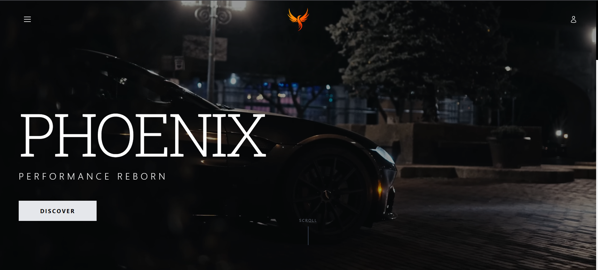
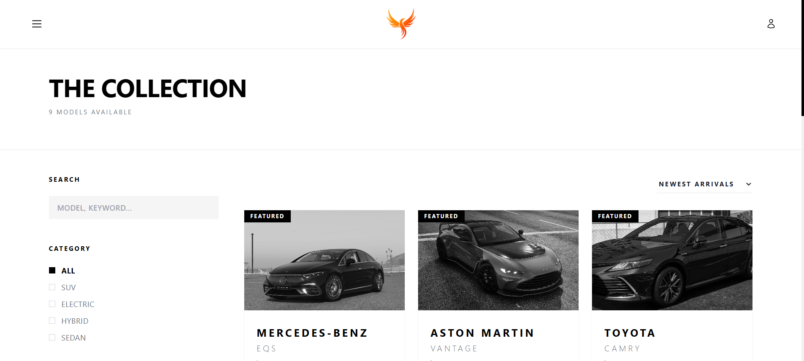
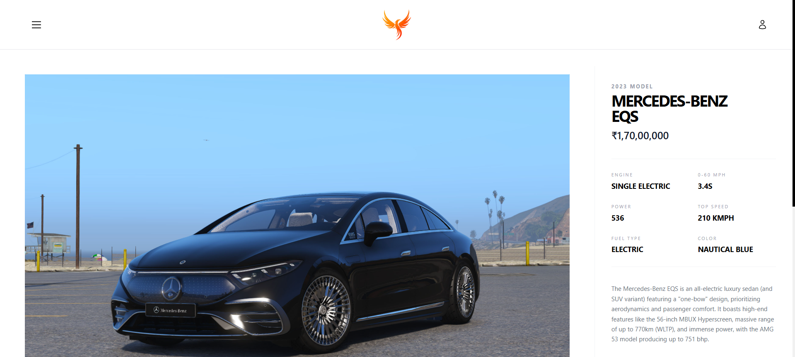
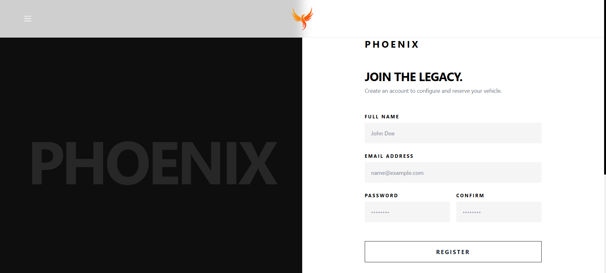
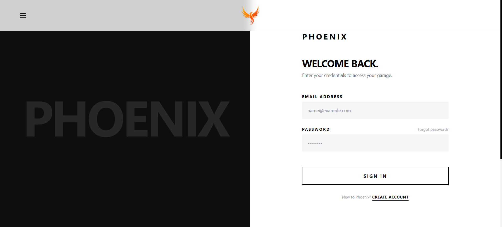
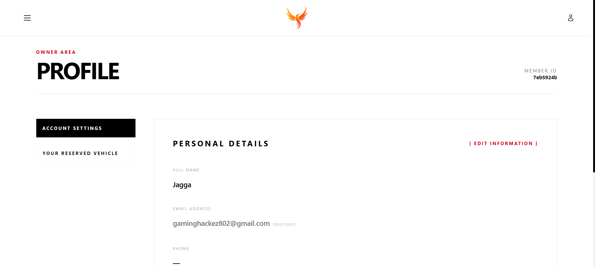
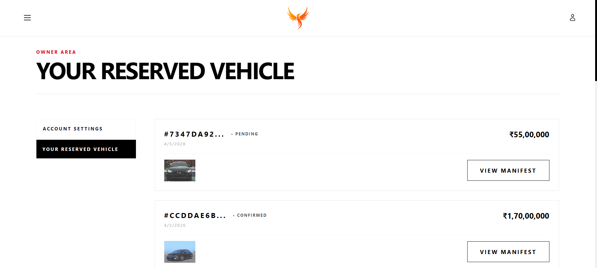
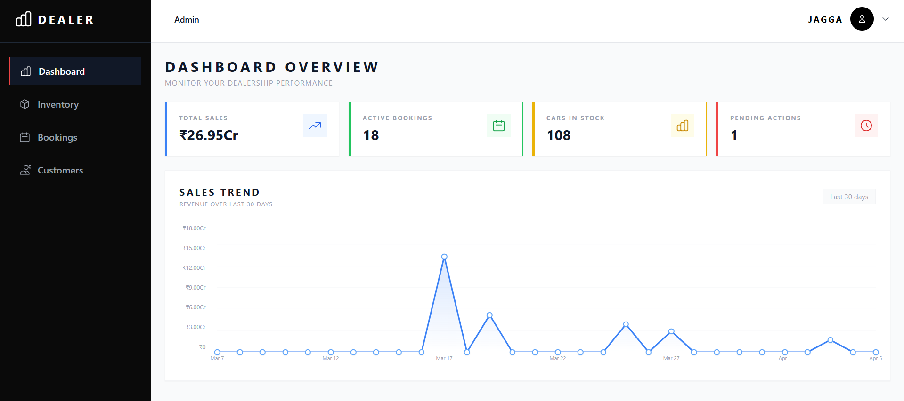
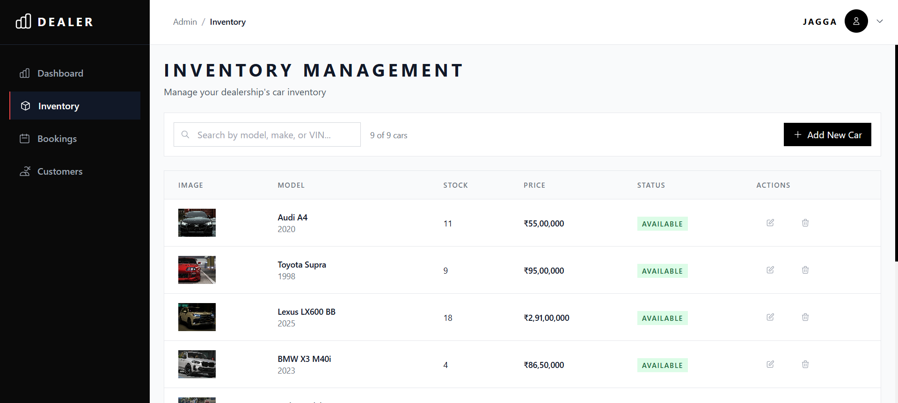
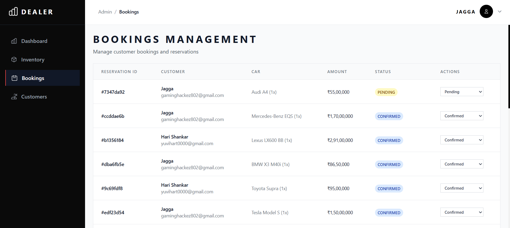
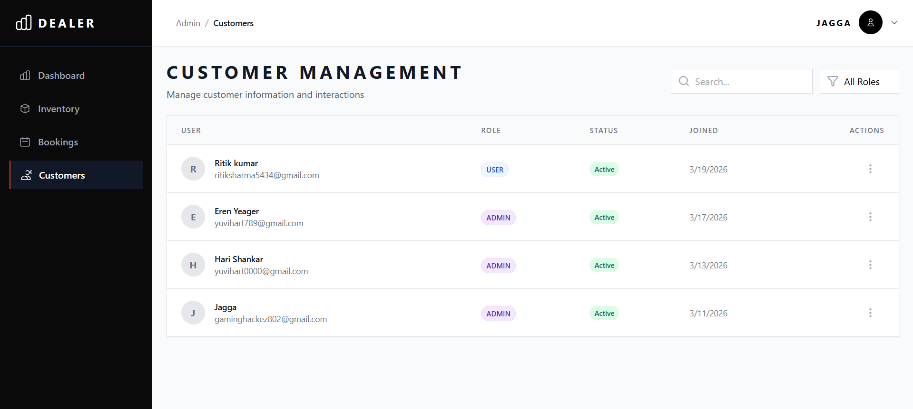
Testing ensures the web application is stable, secure, and performs according to the documented functional requirements. The testing strategy for Phoenix involved Manual System Testing covering UI interactions, API responses, and database integrity.
| Test Case ID | Description | Expected Result | Status |
|---|---|---|---|
| TC-AUTH-01 | Register account with valid data | Account created, user redirected to login | Pass |
| TC-AUTH-02 | Register with existing email address | System displays "Email already exists" error | Pass |
| TC-AUTH-03 | Login with correct credentials | JWT token issued, user routed to Home | Pass |
| TC-AUTH-04 | Login with incorrect password | System displays "Invalid credentials" error | Pass |
| TC-AUTH-05 | Attempt access to /admin as regular user | Access Denied, redirected to Home | Pass |
| Test Case ID | Description | Expected Result | Status |
|---|---|---|---|
| TC-CAR-01 | Load main inventory page | Displays first 12 cars with pagination | Pass |
| TC-CAR-02 | Filter by Category = "SUV" | Only vehicles tagged as SUV are listed | Pass |
| TC-CAR-03 | Search query = "Model 3" | Tesla Model 3 returned in results | Pass |
| TC-CAR-04 | Sort results by Price (Low to High) | List rerenders with cheapest cars first | Pass |
| Test Case ID | Description | Expected Result | Status |
|---|---|---|---|
| TC-RES-01 | Book car with stock = 1 | Reservation created, status pending | Pass |
| TC-RES-02 | Verify stock after booking | Car stock reduced to 0 in database | Pass |
| TC-RES-03 | Attempt booking car with stock = 0 | Button disabled, API returns Insufficient Stock | Pass |
| Test Case ID | Description | Expected Result | Status |
|---|---|---|---|
| TC-ADM-01 | Admin accesses dashboard routing | Dashboard loads seamlessly with revenue stats | Pass |
| TC-ADM-02 | Non-admin role accesses dashboard | Redirected to home page, access denied | Pass |
| TC-ADM-03 | Admin safely deletes a car listing | Car removed from database and synced in UI | Pass |
To ensure the safety of user data, inventory manipulation, and transactional integrity, the Phoenix web application integrates multiple layers of active and passive cybersecurity countermeasures.
To thwart brute-force dictionaries and rainbow-table attacks, Phoenix absolutely prohibits plain-text
password storage. During the /api/auth/register flow, the backend hands off the raw password to
Supabase Auth which internally scrambles it using the computationally expensive Bcrypt
hashing algorithm with variable salt rounds. Consequently, even in the catastrophic event of a massive data
breach exposing the entire user database, malicious actors would be theoretically unable to reverse-engineer
user passwords.
The frontend React framework inherently mitigates Cross-Site Scripting (XSS) vectors. Under the hood, JSX mathematically escapes all dynamically rendered variables before painting them into the DOM elements, rendering injected malicious JavaScript strings entirely inert. Additionally, token-based authentication (JWTs sent via headers) circumvents classic CSRF attack vectors intrinsically, as opposed to highly exploitable legacy cookie-based session attachments.
Publicly exposed Authentication endpoints (Login & Register) implement aggressive rate-limiting protocols. Express throttles repeated requests originating from identical IP addresses attempting to brute-force combinations. Beyond immediate application level thresholds, the deployment infrastructure (Vercel edge network) operates an enterprise Web Application Firewall (WAF) absorbing Layer 4 volumetric Distributed Denial of Service (DDoS) assaults dynamically.
Total separation of power exists within the Phoenix routing logic architecture. A specific column inside the
profiles schema forcefully dictates a user's permission echelon: definitively categorizing them
as an absolute admin or standard user.
The Express backend employs a rigorous requireAdmin middleware. Every destructive API call
(e.g., DELETE /api/cars/:id, PUT /api/admin/bookings/:id/status) mathematically
evaluates the requesting JSON Web Token, queries the database to extract the underlying user role, and
immediately terminates processing returning exactly an HTTP 403 Forbidden constraint if the role equates to
anything other than an explicit admin designation.
This operational guide breaks down sequential instructions required to practically navigate and utilized the deployed infrastructure across assorted user personas.
Account Registration & Authentication:
1. Access the Phoenix domain URL via a standard web browser.
2. Navigate to the top-right authentication panel and initialize "Sign Up".
3. Input requisite demographic data (Complete Name, Email Address).
4. Define an alphanumeric complex password exceeding standard length thresholds.
5. Upon submission, traverse to the "Login" panel, securely authenticating via the newly instantiated
credentials.
Browsing & Filtering Vehicles:
1. From the primary Landing Page, migrate vertically to the "Browse Inventory" catalyst button.
2. Engage the lateral Filter pane.
3. To isolate a specific body format, execute a click on respective categorical toggles (e.g., SUV, Electric,
Sports).
4. Modulate the sequential Price Slider apparatus to impose maximum financial caps reflecting personal budget
limits.
5. Scrutinize the grid returning highly filtered, specific automotive results.
Reservation Execution Workflow:
1. Identify an appealing vehicle and trigger its respective "View Deals" UI element.
2. Extrapolate technical metrics inside the isolated Car Specification Table (Horsepower, Mileage, Trim
level).
3. Validate physical stock availability designated by numerical green badges.
4. Execute the prominent "Book Now" CTA element.
5. Observe the automated routing to exactly the "My Reservations" dashboard, visually confirming the booking
transitioning dynamically into a "Pending Analysis" state.
Fleet Integration Protocol:
1. Authenticate utilizing explicitly granted Administrator credentials.
2. Exclusively access the restricted Dashboard routing portal via the Navigation element.
3. Pivot to the "Manage Inventory" internal module.
4. Select "Add New Listing" to conjure the insertion form modal.
5. Comprehensively map vehicle specifications mapping to exact datatypes (Year mandates integer, Price
mandates decimal).
6. Append external Image URLs linking to standard Content Delivery Networks.
7. Finalize submission. The inventory array immediately reflects the newly instantiated vehicle across the
global platform.
To ensure systemic rigor, a matrix was designed targeting boundary limit scenarios spanning authentication edge cases to database race conditions.
| Req ID | Test Parameter | Input Action | Expected Algorithmic Action | Actual System State |
|---|---|---|---|---|
| FR-U01 | Auth Boundary | Submits Registration with password length = 4 | Backend intercepts, validates against 8-char constraint, returns HTTP 400. | Error caught. UI renders "Weak Security Structure" banner. |
| FR-U02 | Token Forgery | Attaching arbitrarily fabricated JWT string in Header | authMiddleware mathematically attempts RSA signature validation. Process fails immediately. | Connection violently aborted. HTTP 403 Forbidden thrown. |
| FR-U08 | Race Condition | Two isolated Chrome sessions attempt booking car (Stock=1) exactly simultaneously. | Database executes row-level pessimistic lock. One process succeeds, second process errors mathematically. | PostgreSQL enforces constraint. First user acquires car, second user receives Stock Error alert. |
| FR-A04 | Orphan Deletion | Admin attempts to delete 'Car X' which possesses active User Reservations | Supabase Foreign Key cascading triggers rejection constraint to prevent orphaned orders. | Database overrides Admin. Refuses to execute DELETE. Data integrity maintained. |
| NFR-05 | Responsive Shift | Shrinking browser viewport to 320px width dynamically. | Tailwind Media Queries trigger cascade. Grid transitions from flex-row to flex-col instantly. | Mobile layout successfully stabilizes. No horizontal overflow detected. |
Prior to full infrastructure deployment, User Acceptance Testing was initiated involving external peers simulating standard automotive consumers.
ResponsiveContainer components forcing 100% relative width allocations.The development of the "Phoenix" Car Commerce web application successfully achieved the primary objectives outlined at the project's inception. By utilizing modern web technologies — React.js for a responsive, interactive frontend; Node.js with Express for a robust RESTful API layer; and Supabase PostgreSQL for secure, scalable data storage — the project delivered a complete, end-to-end digital marketplace.
The system effectively bridges the gap between automotive businesses and consumers by providing a seamless browsing experience, comprehensive inventory management, and a secure reservation workflow. The integration of Role-Based Access Control guarantees that sensitive administrative functions are isolated from consumer-facing operations. Ultimately, Phoenix demonstrates how modern full-stack development practices can be applied to digitize and streamline traditional, high-value retail processes like automobile sales.
While the current iteration of Phoenix provides a strong functional baseline, the application architecture is designed for extensibility. Several enhancements could be implemented in future phases: